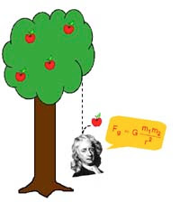
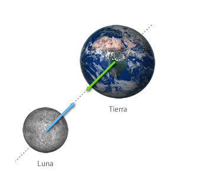
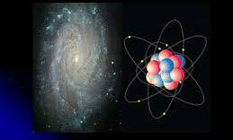
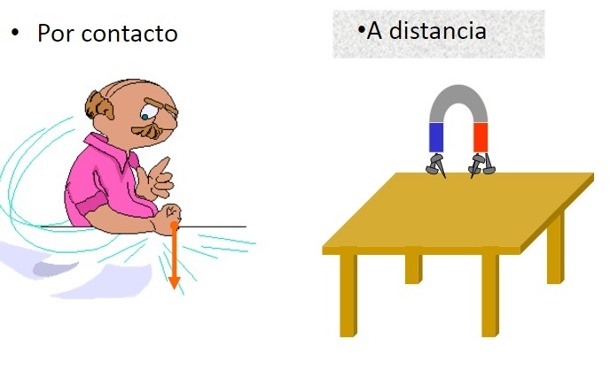

FUERZA
FUERZA es toda causa capaz de producir, modificar o impedir un movimiento y/o deformar un cuerpo. También podemos definirla como la acción o influencia que modifica el estado de reposo o de movimiento de un objeto.
Ilustración 1 Fuente http://definicion.mx/wp-content/uploads/2013/06/fuerza.jpg
Por ejemplo, al observar la ilustración 1 que simula una acción forzosa, podemos señalar:
a) El lugar donde se ató el alambre es el PUNTO DE APLICACIÓN.
b) La posición horizontal de la cuerda, que indica la DIRECCIÓN.
c) El lado hacia el cual se desea desplazar la piedra es el SENTIDO.
d) El mayor o menor desplazamiento está dado por la INTENSIDAD O MÓDULO DE LA FUERZA.
Siempre que podamos reconocer estos componentes es porque se trata de una magnitud vectorial y, por ende, se representa por medio de vectores.
Existen distintos tipos de fuerzas y, de acuerdo con los componentes que se consideren, se las puede agrupar de distintas maneras. Por ejemplo, bajo el título de Fuerzas Fundamentales se agrupan a las fuerzas del Universo que no se pueden explicar en función de otras más básicas. Hasta ahora se conocen cuatro: gravitatoria, electromagnética, nuclear fuerte y nuclear débil.
La fuerza gravitatoria o gravitación es la fuerza de atracción que una masa ejerce sobre otra; afecta a todos los cuerpos. La gravedad es una fuerza muy débil y de un sólo sentido, pero de alcance infinito, que actúa entre la Tierra y cualquier objeto sobre ella.
 
Ilustración 2 Fuente: www.taringa.net Ilustración 3 Fuente: Físicalab
-
La fuerza electromagnética afecta a los cuerpos eléctricamente cargados. Es la fuerza involucrada en las transformaciones físicas y químicas de átomos y moléculas. Es más intensa que la fuerza gravitatoria, puede tener dos sentidos (atractivo y repulsivo) y su alcance es infinito.

Ilustración 4 Fuente: antecedentesdelafisica.blogspot.com
- La fuerza o interacción nuclear fuerte es la que mantiene unidos los componentes de los núcleos atómicos, y actúa indistintamente entre dos nucleones cualesquiera, protones o neutrones. Su alcance es del orden de las dimensiones nucleares, pero es más intensa que la fuerza electromagnética.
Ilustración 5 Fuente: Muy Interesante.es
- La fuerza o interacción nuclear débil es la responsable de la desintegración beta de los neutrones; los neutrinos son sensibles únicamente a este tipo de interacción (aparte de la gravitatoria, que afecta a todos los cuerpos). Su intensidad es menor que la de la fuerza electromagnética y su alcance es aún menor que el de la interacción nuclear fuerte.
Ilustración 6 Fuente: Keymalu.blogspot.com
Ahora, si analizamos los tipos de fuerzas teniendo en cuenta la manera con que interaccionan entre los objetos, las podemos clasificar en:
- fuerzas de contacto.
- fuerzas de acción a distancia.
Las fuerzas de contacto son las que resultan cuando dos objetos interactúan mientras se contactan físicamente. Algunos ejemplos son las fuerzas de: fricción, tensión, normal, de resistencia al aire, aplicada, empuje y de resorte o restauradora.
Las fuerzas de acción a distancia son las que resultan de la interacción de dos objetos que no tienen que estar en contacto físico y son capaces de ejercer un cambio debido a esa separación física. Algunos ejemplos de este tipo de fuerza son las fuerzas gravitacionales y las electromagnéticas.

Ilustración 7 Fuente: separatasdebiofisicamvd.blogspot.com
Obra publicada con Licencia Creative Commons Reconocimiento Compartir igual 4.0